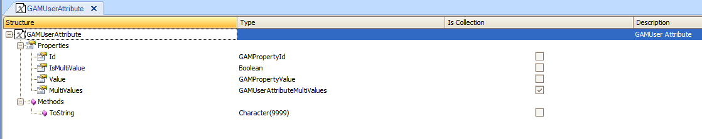

GAM API provides methods to extend the properties of GAM entities in GAM database, by means of an OAV Pattern. Extensibility of GAM Users Table attributesThe purpose is to allow to add dynamically different attributes to GAM Users table, such as "Company", "Telephones", etc, which are not included in GAM Users table by default. The GAMUser External Object (which is part of the GAM Library consolidated when Enable Integrated Security Property is set to Yes), provides methods to Add, Update, and Delete dynamic attributes in GAM Users table. The dynamic attributes are represented as GAMUserAttribute data type. GAMUserAttribute is an external object which is also part of GAM library folder. Let's see some details of these objects and the methods they provide, as well as some examples on how to use this functionality. GAMUserAttribute ObjectGAMUserAttribute is an external Object, part of the GAM Library consolidated when Enable Integrated Security Property is set to Yes. It represents an attribute to be added or updated dynamically in GAM Users entity. It has the following properties:
 GAMUser objectIt represents the User in GAM database. The following are the methods to get, update, and delete attributes (represented as GAMUserAttribute Objects) in GAM Users table.
Examples1. How to scan the extended attributes of a given User GAMUser object has a property named "Attributes" which returns a collection of GAMUserAttribute. In order to get all the extended attributes of a given user, you need to loop through the collection as the following sample code shows:
&GAMUser.Load(&UserGUIDselected) //&GAMUser is GAMUser data type, &UserGUIDselected is GAMGUID data type
For &UserAttr In &GAMUser.Attributes //&UserAttr is GAMUserAttribute data type
&UserAttribute = &UserAttr.Id //&UserAttribute is GAMPropertyID data type
&AttrValue = &UserAttr.Value //&AttrValue is GAMPropertyValue data type
EndFor
As the implementation is done using a collection, you can perform all the operations which are valid for collections (such as add, remove, etc). Nevertheless, the API provides methods to add, update, and delete dynamic attributes without the need of performing operations on the collection, which is shown in the following examples. 2. How to get an extended attribute value given its ID: GetAttribute method of GAMUser object &GAMUser.Load(&UserGUIDselected) //&GAMUser is GAMUser data type, &UserGUIDselected is GAMGUID data type &GAMUserAttribute = &GAMUser.GetAttribute(&UserAttribute.Id,&Errors) //&UserAttribute is GAMPropertyID data type //&UserAttribute is GAMPropertyID data type, &Errors is collection of GAMError, &GAMUserAttribute is GAMUserAttribute data type &AttrValue = &GAMUserAttribute.Value //&AttrValue is GAMPropertyValue data type 3. How to update an extended attribute: SetAttribute method of GAMUser object SetAttribute methods inserts a new attribute if it doesn't already exist, on the other hand it updates the value of the existing attribute. Take into account that the dynamic attributes are inserted into another table different than the Users tables, where the KEY is composed of UserGUID, and UserAttId (the User GUID and the Attribute Id).
&GAMUser.Load(&UserGUIDselected) //&GAMUser is GAMUser data type, &UserGUIDselected is GAMGUID data type
&GAMUserAttribute.Id = &UserAttribute //&GAMUserAttribute is GAMUserAttribute data type, &UserAttribute is GAMPropertyID data type
&GAMUserAttribute.Value = &UserAttributeValuenew
&isOK= &GAMUser.SetAttribute(&GAMUserAttribute,&Errors) //&Errors is collection of GAMError
if &isOK
commit
else
For &Error in &Errors
Msg(Format(!"%1 (GAM%2)", &Error.Message, &Error.Code))
EndFor
endif
For example, suppose that we need to add the "HairColor" attribute for the user, so in this example &UserAttribute = "HairColor" and &UserAttributeValuenew = 'black'. Another way of adding attributes is to manage the collection of GAMUserAttribute. In this case you need to execute save() and commit command, as the following code shows: &GAMUser.Load(&UserGUIDselected) &GAMUserAttribute = new () //&GAMUserAttribute is GAMUserAttribute data type &GAMUserAttribute.Id = &UserAttribute //&UserAttribute is GAMPropertyID data type &GAMUserAttribute.IsMultiValue = False &GAMUserAttribute.Value = &UserAttributeValuenew &GAMUser.Attributes.Add(&GAMUserAttribute) &GAMUser.Save() For &Error In &GAMUser.GetErrors() msg(&Error.Message + !"(GAM" + &Error.Code.ToString().Trim() + !")") EndFor if &GAMUser.Success() commit endif Adding an attribute using the add method of the collection always adds a new item to the collection, if the UserAttId already exists a "Record already exists(GAM42)" error will be thrown. 4. How to delete an extended attribute: DeleteAttribute method of GAMUser object &GAMUser.Load(&UserGUIDselected) &GAMUserAttribute = new() //&GAMUserAttribute is GAMUserAttribute data type &GAMUserAttribute.Id = &UserAttribute //it can be "HairColor" &GAMUserAttribute.Value = &AttrValue //it can be "black" &isOK = &GAMUser.DeleteAttribute(&GAMUserAttribute,&errors) For &Error In &GAMUser.GetErrors() msg(&Error.Message + !"(GAM" + &Error.Code.ToString().Trim() + !")") EndFor if &isOK commit endif Another way of deleting an attribute is to perform the remove method of the collection of GAMAttribute items. See AlsoHowTo: GAM User table extensibility: multivalued attributes
|